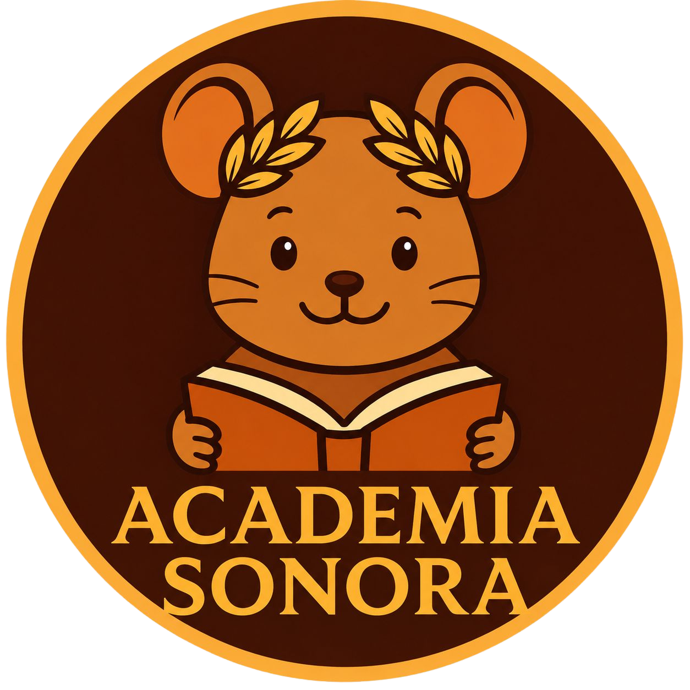
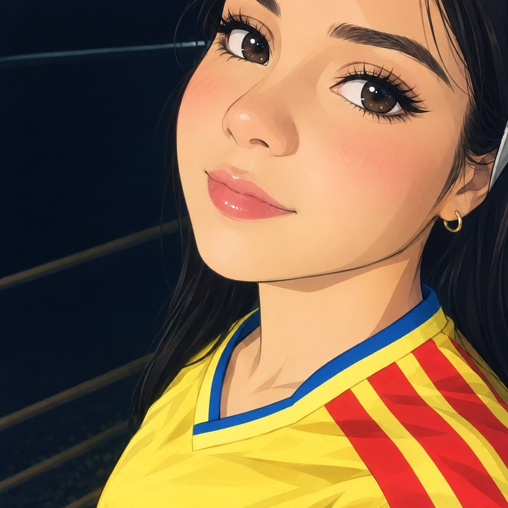
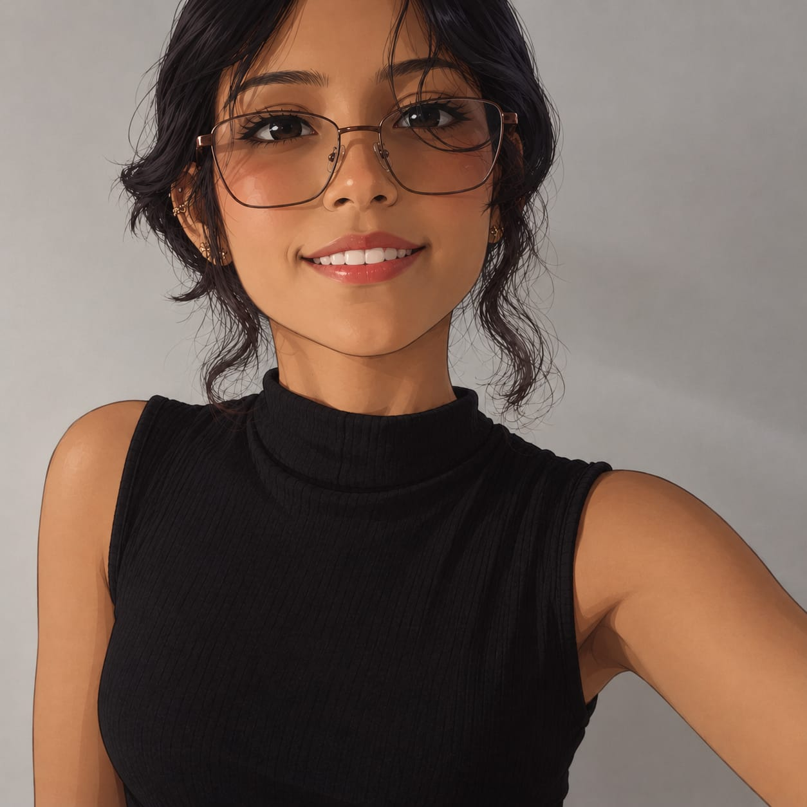
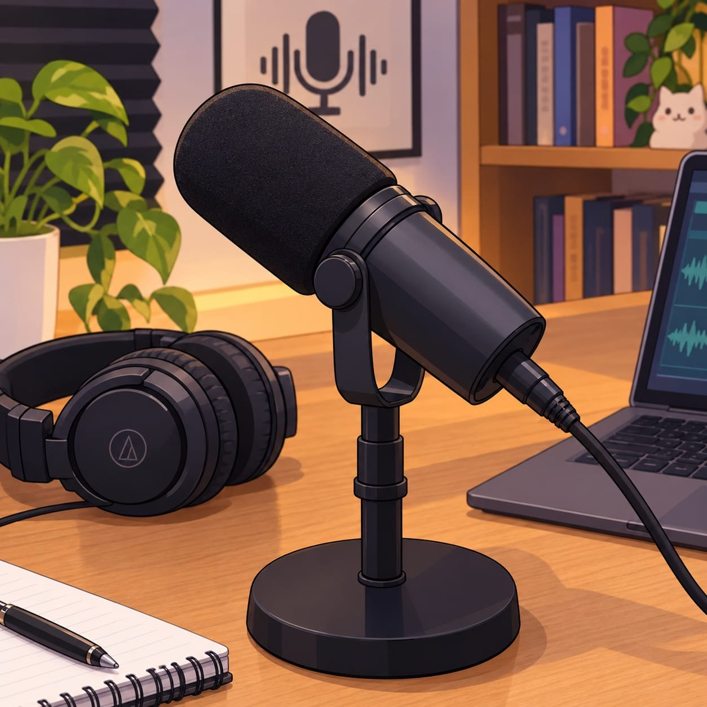
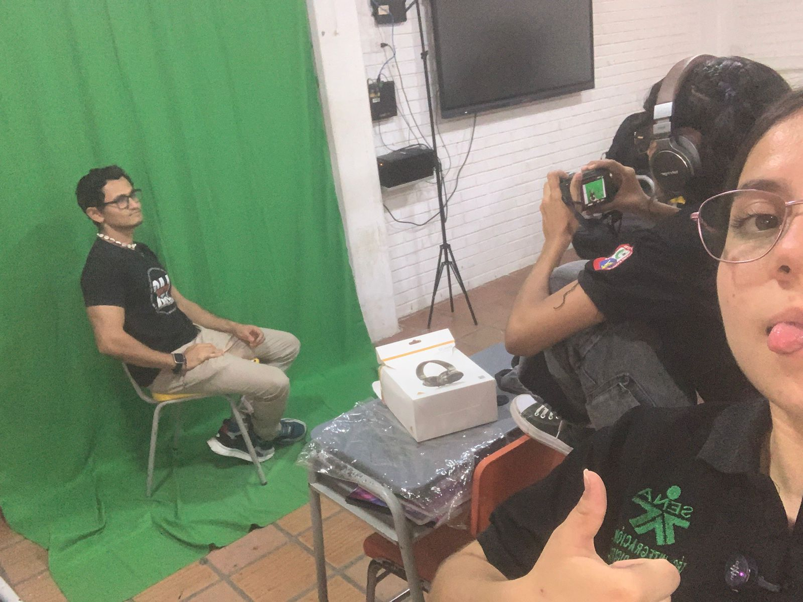
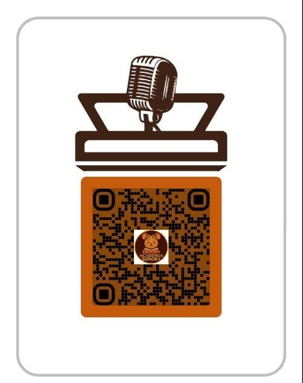
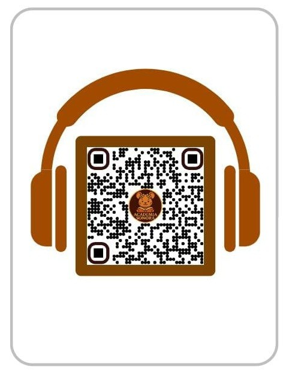
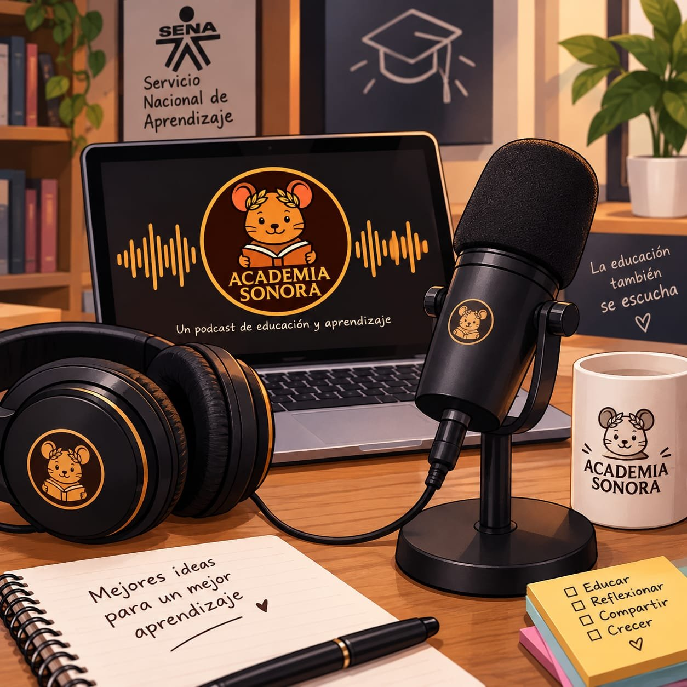

SUSTENTACIÓN DE PROYECTO · SENA / IEDP
El podcast que le pone voz a la educación
Técnica en Integración de Contenidos Digitales · Institución Educativa La Divina Pastora · Cúcuta
01 — El equipo


02 — El punto de partida
Detectamos poca comunicación y bajo interés hacia los temas de nuestra educación. Queremos mostrarlos de forma más llamativa y visibilizar las dificultades para que tengan una solución más pronta.
Un espacio informativo creado por estudiantes de Contenidos Digitales: un podcast que informe a estudiantes, docentes y administrativos sobre la comunidad educativa, fomentando el sentido de pertenencia.
03 — Nuestra propuesta
El podcast institucional nace de nuestra propia voz como estudiantes: auténtico y cercano. No solo hablamos — invitamos a cuestionar, reflexionar y participar en la vida escolar, conectando con futuros estudiantes y familias.
Su valor: ofrece al oyente temas de interés para debatir, y beneficia tanto a docentes como a estudiantes que quieran participar.

04 — Hacia dónde vamos
Objetivos específicos
05 — Por qué vale la pena
El podcast institucional es una herramienta innovadora para fortalecer la comunicación y la identidad educativa. Buscamos informar, reflexionar y compartir experiencias, aprovechando las TIC para llegar de forma cercana y dinámica a estudiantes, docentes y familias — fomentando la participación y el desarrollo de habilidades comunicativas y tecnológicas en la comunidad.
06 — Cómo lo haremos

Software de grabación y edición, aplicaciones móviles, plataformas de publicación y herramientas de diseño gráfico:
07 — Lo que necesitamos
Un lugar tranquilo para grabar: aula, sala acondicionada o cabina, con guiones o plan de contenido educativo.
Docentes, estudiantes, moderadores y técnicos de apoyo.
Estable, para subir y difundir los episodios.
Portadas, música libre de derechos y efectos de sonido.
08 — Nuestra identidad
Crear un espacio de comunicación institucional a través de un podcast educativo que informe, reflexione y comparta experiencias sobre temas relevantes de la educación, fortaleciendo la participación y el sentido de pertenencia de la comunidad.
Ser en 2027 un referente de podcast escolar en la región: un espacio donde la voz de docentes y estudiantes transforma la manera de entender la educación, inspirando a otras instituciones a contar sus propias historias.
09 — Lo que vamos a construir
Repositorio de episodios en video, reproductor incrustado, ficha de invitados y notas de cada episodio.
Audiogramas para redes sociales, portadas y banners de episodios, y clips verticales tipo Reels/Shorts.

Escanea y mira nuestro canal en YouTube
Escanea y visita nuestro sitio web10 — Nuestra marca
Diseño circular en tonos café oscuro con borde dorado. Al centro, un ratoncito con corona de laurel sostiene un libro — símbolos del conocimiento, el aprendizaje y la excelencia académica. Abajo, el nombre del proyecto en tipografía clásica refuerza su identidad educativa y profesional.
11 — A quién llegamos
Global — distribución 100% digital a través de YouTube y plataformas de podcast.
Jóvenes de 13 a 28 años interesados en aprendizaje autónomo, orientación vocacional e innovación educativa, que buscan contenidos dinámicos y accesibles.
12 — Lo que nos distingue
Academia Sonora ofrece contenido educativo en formato podcast, que permite aprender de forma flexible desde cualquier lugar. Aborda temas como el aprendizaje autónomo, la orientación vocacional y la innovación educativa con un lenguaje claro y dinámico. Es gratuito, se distribuye en YouTube y promueve la participación mediante comentarios e interacción en redes sociales.

13 — Cómo lo damos a conocer
Anuncios difundidos a través de redes sociales, principalmente en YouTube. Permiten dar a conocer el nombre del proyecto y sus episodios, llegando a más estudiantes, docentes y familias de la comunidad educativa.
14 — Nuestra identidad visual
GRACIAS POR SU ATENCIÓN
Academia Sonora — el podcast que le pone voz a la educación.
Técnica en Integración de Contenidos Digitales · SENA, IEDP La Divina Pastora.